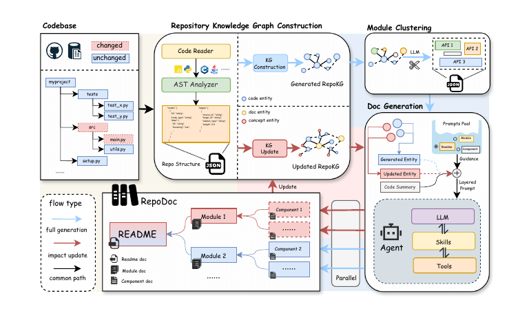
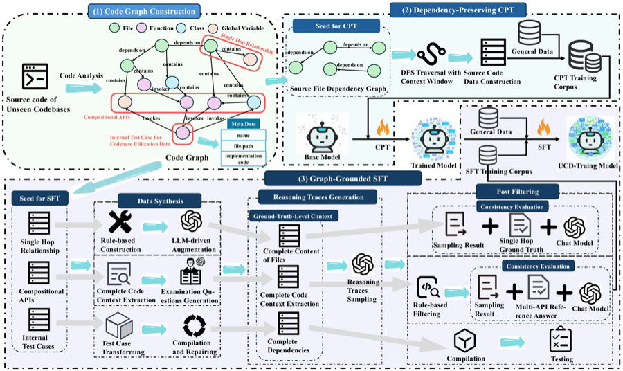

Publications
-
RepoDoc: A Knowledge Graph-Based Framework to Automatic Documentation Generation and Incremental Updates
RepoDoc builds repository knowledge graphs to generate modular documentation, propagate semantic impact, and update affected documents incrementally after code changes.

-
Unseen-Codebases-Domain Data Synthesis and Training Based on Code Graphs
This work uses code graphs to synthesize repository-domain training data, helping models adapt to previously unseen codebases and reason across project-level dependencies.
